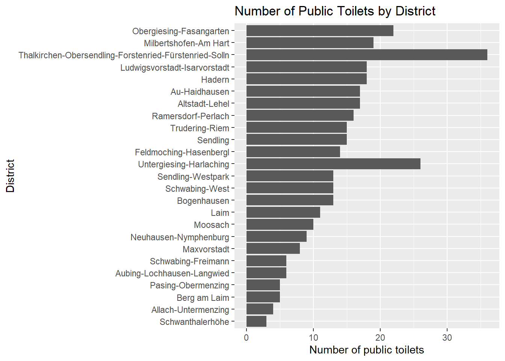
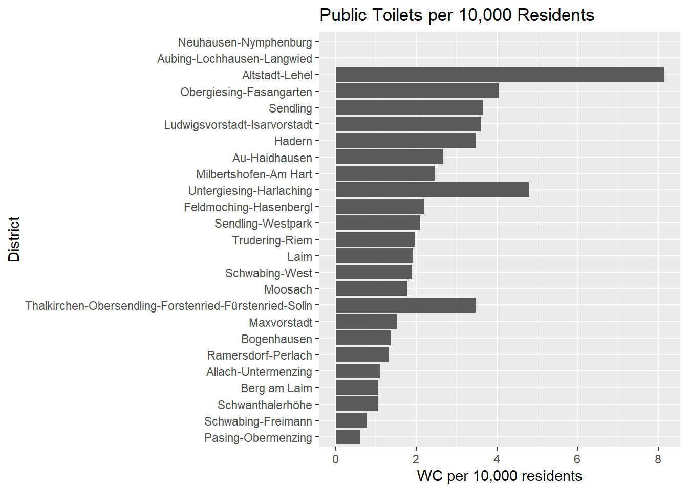
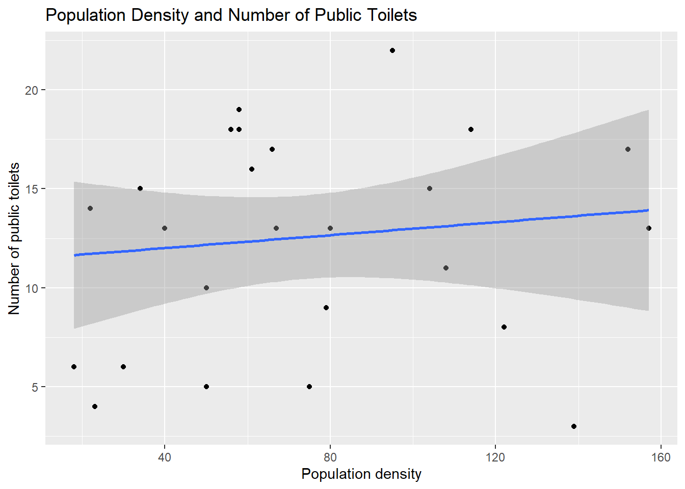
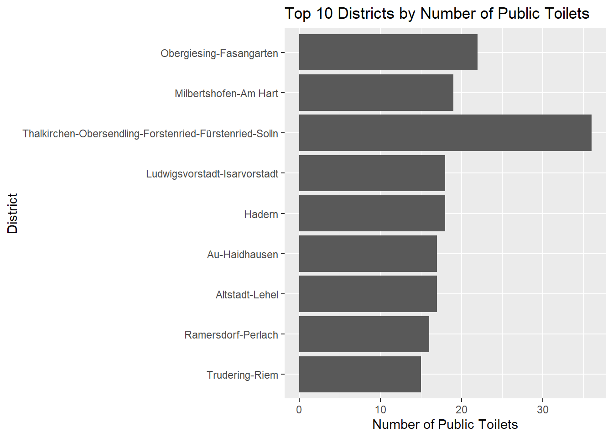

Munich Public Toilets
This project analyses the distribution of public toilets across Munich districts.
Research Question
How are public toilets distributed across Munich districts?
Which districts have the highest and lowest number of public toilets?
Is population density associated with public toilet availability?
Data and licences
We use data on:
public toilets in Munich
population by district
area and population density by district
our main data set:
- “Bevölkerung in den Stadtbezirken” (URL: https://opendata.muenchen.de/dataset/bevoelkerung-stadtbezirken) provided by the statistical department of the regional capital Munich under the “Datenlizenz Deutschland – Namensnennung – Version 2.0” as outlined in : www.govdata.de/dl-de/by-2-0 It allows free universal use under the condition of properly naming the data set and its creator.
for visualisation / map of Munich with subdivisions :
- https://geoportal.muenchen.de/portal/opendata/ , also provided by the statistical department of Munich under “Datenlizenz Deutschland – Namensnennung – Version 2.0” as stated above.
the exact data we used can be downloaded here:
cvs data set with population (https://opendata.muenchen.de/dataset/e3f5dbd2-39cc-40cd-bc91-4bb49a0b1802/resource/a641ce6a-4e01-4f4b-9976-1ae6a47e3762/download/bevolkerung_bezirke_neu.csv)
for the map (https://geoportal.muenchen.de/geoserver/gsm_wfs/ows?service=WFS&version=1.0.0&request=GetFeature&typeName=gsm_wfs:vablock_stadtbezirk&outputFormat=application/json)
Number of Public Toilets
Public Toilets per 10,000 Residents

Population Density and Public Toilets

Top 10 Districts by number of Public Toilets

Key Findings
Conclusion
The results suggest that population density is not strongly associated with the number of public toilets. Some districts with high population density have relatively few public toilets, while others have many. This indicates that factors others than population density may influence the distribution of public toilets in Munich. Future analyses could include tourist numbers, public transport hubs, or district size.